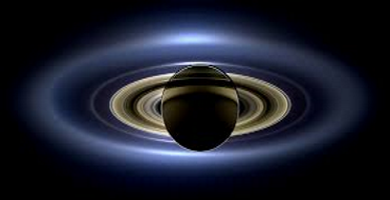
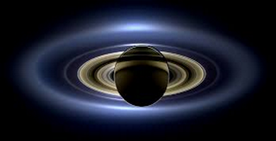

Saturn is the sixth planet in the solar system and is most famous for its many rings surrounding the planet. Saturn separates itself from the sun with an amazing 1.429 billion km of space! This is also the first planet to have a distance of over 1 billion km However with this incredible distance, poor Saturn will have to wait 29 years until it orbits 1 full turn around the sun. With the many rings Saturn has, it was named after the Roman god of agriculture and given the symbol ♄, which represents the sickle that the Roman god would use. Saturn covers 8.2713×1014 km3 and weighs 5.6836×1026 kg, making it the second largest planet in the solar system. When on the surface of Saturn, you wouldn't feeling much of a gravitational change as Saturn's gravitational pull is only 10.44 m/s2, which is the planet that has the most closet gravitational pull to Earths. Sadly Saturn isn't all that colourful as all of the other planets as you pretty much only see brown and other shades of it. Just like any other of the Jovian planets, they are really far from the sun and don't receive as much heat, causing Saturn to reach average temperatures of 134K.
 

Wikipedia, The Free Encyclopedia. (August 31, 2016) Saturn. Retrieved September 26, 2016, from https://en.wikipedia.org/wiki/Saturn
Digital Image: Saturn, ~https://upload.wikimedia.org/wikipedia/commons/thumb/c/c7/Saturn_during_Equinox.jpg/300px-Saturn_during_Equinox.jpg~ Retrieved September 26, 2016.
Digital Image: Rings of Saturn, ~https://upload.wikimedia.org/wikipedia/commons/b/b6/PIA17172_Saturn_eclipse_mosaic_bright_crop.jpg~ Retrieved September 26, 2016.